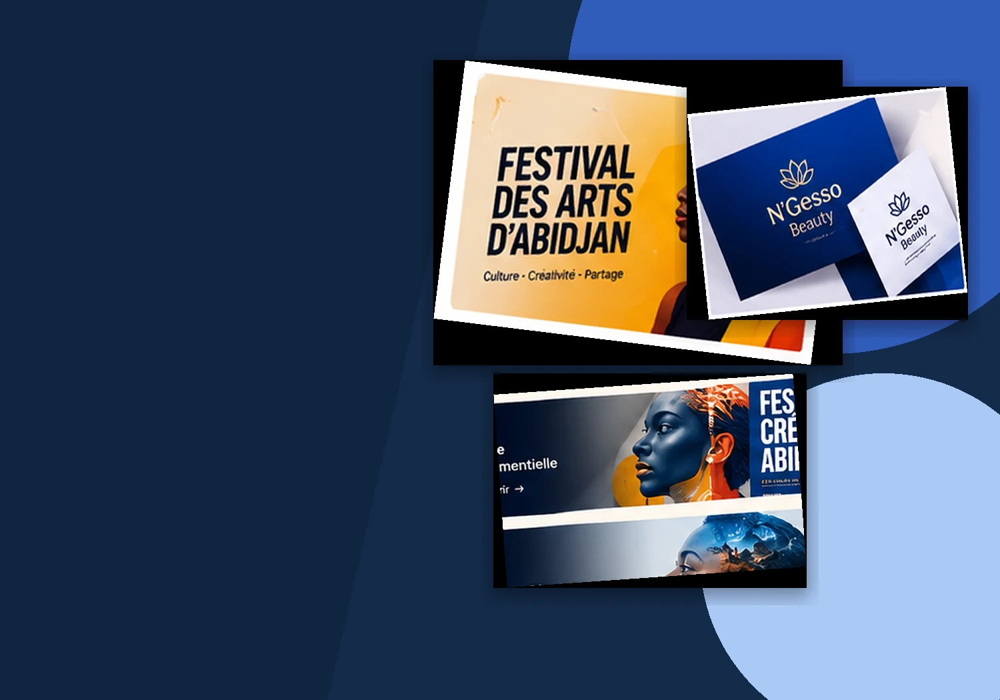

Étudiante en design graphique · Abidjan, Côte d’Ivoire
Je transforme les idées en expériences visuelles.
Je suis Carine N’Guessan, jeune designer passionnée par l’identité visuelle, la communication graphique et la création de contenus. J’explore les formes, les couleurs et les images pour donner vie à des idées qui ont du sens.

CREATE
INSPIRE
Sélection · Portfolio
Des idées en images.
Une sélection de concepts et d’espaces de présentation pour mettre en valeur les projets scolaires et personnels. Les visuels de démonstration sont clairement identifiés et remplaçables.
« Le design est pour moi une manière de raconter des histoires sans toujours utiliser des mots. »
Je développe progressivement mon regard, ma méthode et mon univers graphique à travers la formation, l’expérimentation et les projets personnels.
Découvrir mon parcours ↗ Emplacement réservé à votre portrait
Emplacement réservé à votre portraitÀ propos de moi
Une passion,
un métier, une vision.
Je suis Carine N’Guessan, étudiante en design graphique et communication visuelle. Je m’intéresse à la manière dont les images, les couleurs et la typographie peuvent transmettre un message et construire une identité.
Outils & savoir-faire
Créer avec intention.
Des domaines créatifs et des outils à personnaliser selon les pratiques réelles et le niveau de maîtrise. Aucune jauge artificielle n’est utilisée.
Voir les compétences ↗Liste indicative : conserver uniquement les logiciels réellement utilisés.
Une idée à faire grandir ensemble ?
Faisons de vos idées
une réalité visuelle.
Un projet créatif, une collaboration ou une opportunité ? Échangeons autour de vos idées.
Parlons de votre projet ↗